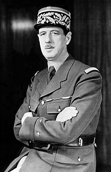

At the outbreak of World War II,Charles de Gaulle was put in charge of the French Fifth Army's tanks in Alsace, and on 12 September 1939, he attacked at Bitche, simultaneously with the Saar Offensive. De Gaulle founded and headed several organization during the course of the war to administer the operation of Free France, starting with the Empire Defense Council days after Vichy capitulated in June 1940, and ending with the Provisional Government, which provided the transition from the liberation of France through the first elections in 1945, to the establishment of the Fourth Republic in 1947.
